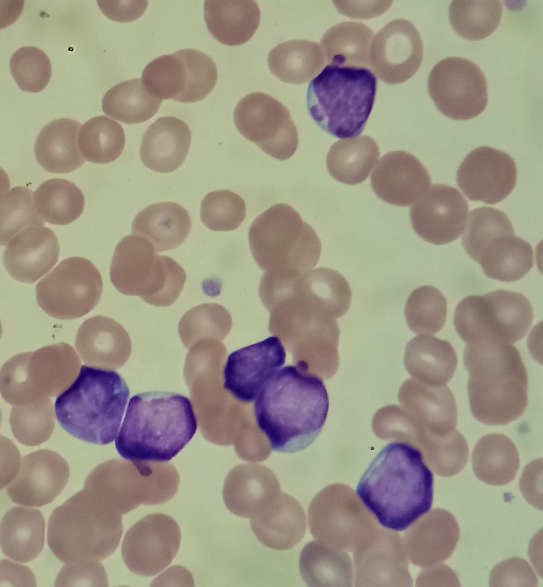

A clue to B-cell identity.
FLOW CYTOMETRY / CASE 001
Laboratory detectives.
ONE SAMPLE.
THOUSANDS OF CLUES.
- 01 The alert
- 02 The smear
- 03 The scan
- 04 The clues
- 05 Your theory
- 06 The reveal
CASE 001
PERIPHERAL BLOOD
EDTA · FICTIONAL SAMPLE
PERIPHERAL BLOOD
EDTA · FICTIONAL SAMPLE
NEW CASEA small tube.
A small tube.
A big question.
A fictional patient has fatigue and unusual bruising. Their blood count has flagged cells that need a closer look.
⚠ Lab alert
Abnormal cells detected
Abnormal cells detected

PREPARED CELLSLASER → LIGHT SIGNALS → DATA
01 Locate the population
Selected on CD45 / side scatter
02 Check immaturity
Selected cells: CD34 positive
03 Identify the lineage
Selected cells: CD19 / CD10 dual positive
Each dot = one cell, shown in all three plots. Pink = the same abnormal cells in every plot. Gray = the remaining cells.
THE EVIDENCE POINTS TOWARD
SUSPECTED
B-cell acute
lymphoblastic
leukemia.
B-ALL
An abnormal population of immature B-lineage cells.
From a suspicious cell to a direction for the care team.
01 / 06YOUR INVESTIGATION
Often seen in developing B cells; not specific to them.
A clue that these cells are immature.
Selected cells coexpress these markers in our simulated case. They are measured with fluorescent antibodies, not inferred from scatter alone.
B-cell clues + immaturity + an unusual population…
What do you think we’re dealing with?
Consider how the clues fit together.A strong lead. More work ahead.
These three markers alone do not prove leukemia: normal B-cell precursors can express them too. A real diagnosis combines the complete marker pattern, blood counts and morphology, usually bone marrow evaluation, genetic testing, and clinical findings.
Medical laboratory scientists uncover and validate the evidence; pathologists and the care team integrate the results.